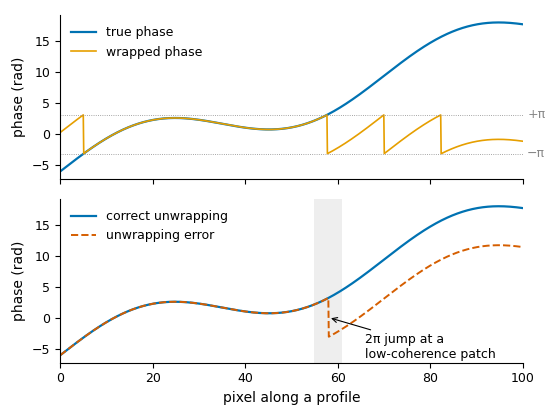
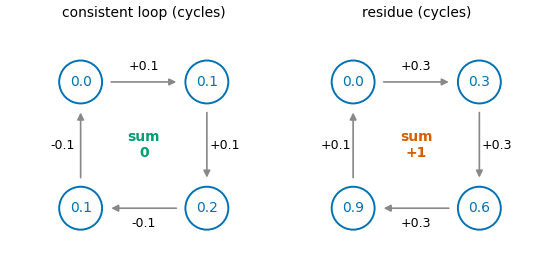

| SAR Concepts: Phase Unwrapping | |
An interferogram records phase only modulo 2π. Phase unwrapping restores the missing whole cycles so that the phase becomes a continuous measurement, which you need before converting phase to displacement or height. It is also the step most likely to add large errors that are hard to see.
The wrapped phase φw lies in (−π, π]. The unwrapped phase is
φu = φw + 2πk
with an unknown integer k for each pixel. Along a profile, unwrapping is easy if the true phase changes by less than π between neighbouring pixels. You then wrap each pixel-to-pixel difference into (−π, π] and add the differences up. Noise or steep phase gradients break that condition, and a single wrong step shifts everything after it by 2π (Figure 1).

Figure 1. Top: the true phase and the wrapped phase that the interferogram records. Bottom: a correct unwrapping and one where a noisy patch made the unwrapper pick the wrong cycle, leaving a 2π step.
In two dimensions, different integration paths between two pixels must give the same result. Add the wrapped differences around the smallest closed loop of 2 × 2 pixels. For consistent data the sum is zero. Where it is ±1 cycle, the loop encloses a residue (Goldstein, Zebker and Werner, 1988), and paths that pass on either side of it disagree by 2π.

Figure 2. Wrapped phase (in cycles) at the corners of a 2 × 2 loop. Each difference is wrapped into [−0.5, 0.5) cycles. Left: the differences sum to zero. Right: they sum to +1, a residue.
Residues come from phase noise in low-coherence areas, from layover, and from true phase gradients steeper than π per pixel. Examples are steep terrain with a large perpendicular baseline, or the deformation field close to an earthquake rupture. Every unwrapper has to decide where to put the 2π discontinuities that connect the residues; it differs only in how it makes that choice.
Multilooking and adaptive filtering, such as the Goldstein filter, reduce phase noise, so far fewer residues remain. They also shrink the data volume. The limit is the fringe density: after multilooking, a fringe must still span several pixels, otherwise real gradients become aliased and create residues themselves.
SNAPHU (Chen and Zebker, 2001) treats unwrapping as a statistical estimation problem. It asks which set of cycle jumps is most probable, given the wrapped phase, the coherence and the amplitude. It then solves the problem approximately with network-flow optimisation. Placing a jump is cheap where the coherence is low and expensive where it is high, so errors are pushed into the noisy areas. The statistical cost mode chooses the model:
SNAP's export writes only the phase and coherence files; no amplitude file is passed to SNAPHU, although the TOPO model can use one to detect layover.
Large interferograms are split into tiles that are unwrapped separately, with an overlap, and then joined by a second optimisation over reliable regions (Chen and Zebker, 2002). The tile cost threshold controls the size of these regions: a larger threshold gives smaller, safer regions at a higher computing cost.
Unwrapped phase is relative. The whole image is known only up to an additive constant. Coherent areas that are separated by water or decorrelated ground (islands, valley sides) each get their own arbitrary multiple of 2π. Before you interpret values, subtract the mean phase of a stable, coherent reference area close to the area of interest. All results are then relative to that area.
Unwrapping errors appear as steps of exactly 2π (λ/2 of line-of-sight motion, 2.8 cm at C-band). They tend to follow coherence boundaries, rivers, or tile edges. To find them:
SnaphuExport) needs a wrapped phase band (unit phase; bands
whose name contains "topo" are skipped) and a coherence band. It writes them as float files into a sub-folder named after the
product inside the target folder, for example
Phase_ifg_<tag>.snaphu.img and coh_<tag>.snaphu.img, together with a
snaphu.conf and an ENVI header for the result, UnwPhase_ifg_<tag>.snaphu.hdr. The tag is
<subswath>_<pol>_<ref-date>_<sec-date> (subswath and polarisation are omitted when the product has none).
Defaults: cost mode DEFO, initialisation MST, 10 × 10 tiles, 200 pixels row and column overlap, tile
cost threshold 500, 4 processors.snaphu.conf
(snaphu -f snaphu.conf <phase file> <width>). SNAP does not write a mask file, so
SNAPHU unwraps every pixel.SnaphuImport) takes two inputs: the wrapped-phase product you exported
and the UnwPhase_*.hdr result. For a stack with one Secondary it names the band
Unw_Phase_ifg_<ref-date>_<sec-date> with unit abs_phase. It keeps
the wrapped bands unless Do NOT save Wrapped interferogram is selected.BatchSnaphuUnwrapOp) runs SNAPHU itself on every per-interferogram
<pair>snaphu.conf in a SNAPHU Export sub-folder. It uses the snaphu executable that
Snaphu Install Location points at, or one already in that folder; only if there is none does it
download SNAPHU there. On Linux the automatic download does not set the executable bit, so the run fails:
install SNAPHU yourself (or chmod +x the downloaded snaphu binary) and point the
tool at its folder. No download is offered for macOS: install SNAPHU yourself. The export sub-folder is
only where SNAPHU runs and where the log is written. It needs at least two wrapped phase bands and a coherence
band. Each wrapped phase band is replaced by UnwPhase_ifg_<tag> with unit
abs_phase, and the coherence and other bands are passed through, so the output feeds SBAS
Inversion directly.Unw prefix. Phase to Displacement uses the first band whose name
starts with "unw" and computes −λ/(4π) · φ in metres. It does not subtract a
reference point; do that first, for example with Band Maths.closure_phase_rms band by default, an RMS of triplet closures per
pixel. Each closure is wrapped to (−π, π] first, so the band shows sub-cycle inconsistency and
does not reveal whole-cycle unwrapping errors; check for those with the unwrapped triplet sum above.Workflows: Sentinel-1 TOPS DInSAR and Stripmap DInSAR.